冬至进补，有平时三倍的功效，那我们在冬至之前，最好着手做三件事情:
第一，每天注意观察自己身体的状况。因为冬至之前阳气最弱，是我们查病的好时机，如果身体哪个地方功能比较虚弱，在冬至前后您的反应就会比平时明显。
第二，准备补心养阳汤的材料。
第三，喝两天葱姜萝卜皮汤。
如果您觉得最近有点受风寒了，担心在喝补心养阳汤的时候会虚不受补，那么您可以先喝两天葱姜萝卜皮汤来散一散表寒。
这道汤适合什么人来喝呢？就是最近一段时间内比较奔波，导致身体受了点寒气，或者是有一点上火，或者是担心自己感冒咳嗽还没有好，完全不能进补的人。
如果这两天您家里在炖汤，也不妨把这三样原料放入正在煲的汤里一起来炖。
喝葱姜萝卜皮汤可以散掉身体里的风寒，以及体内的痰湿，这样就可以以一个比较“干净”的身体来迎接冬至期间的大补。
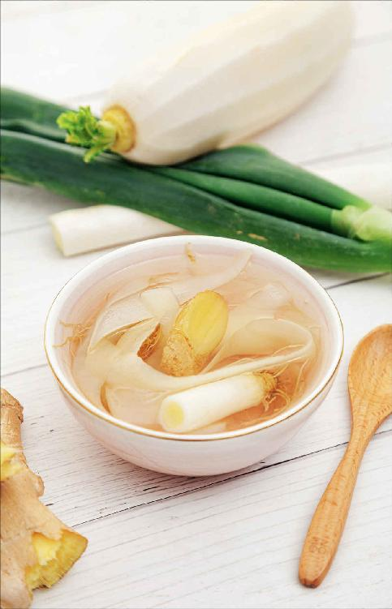
开路汤——葱姜萝卜皮汤
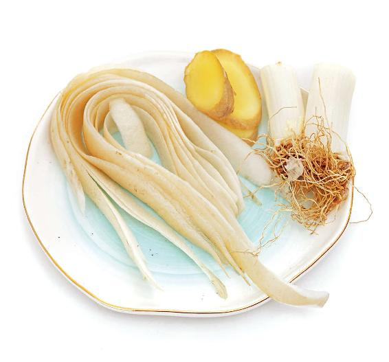
原料：葱白连须2根，带皮生姜3片，半个到一个萝卜的皮。
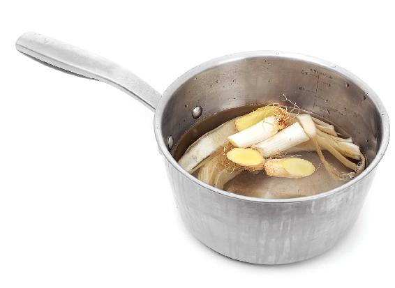
做法：把这三样原料一起煮水喝。
《后汉书》记载：“冬至前后，君子安身静体，百官绝事，不听政。”
这是古代国家的政策，冬至前后停止一切工作，以便所有人安心静养。
直到清朝，乾隆皇帝仍然会在冬至时斋戒闭关。乾隆是中国历史上年寿最高的皇帝。他养生有道，深谙冬至时节要抛开平时日理万机的忙碌，闭关静养的重要性。
冬至宜静养，此时劳累，最伤心脏。如果保养不好，可能影响来年一年的健康，甚至酿成大患。
心源性猝死在这个时节容易高发。老年人在这个时节最忌感冒，容易引发肺部感染、心力衰竭。
这是人体健康的紧要关口。此时如果养好生，则有三倍于平日的功效，给来年打下一个坚实的基础。
因此善养生者，必养冬至。冬至是我们应该全心全意照顾自己的时候。
补心养阳汤
原料：羊肉1～2斤（500 ~ 1 000克），黄芪100克，当归20克，甘蔗2～4节，带皮生姜2块，大枣8个。
调料：黄酒1两（50毫升），香菜1两（50克），胡椒粉、盐少许（喜欢吃辣的话，还可以准备一点辣椒粉）。
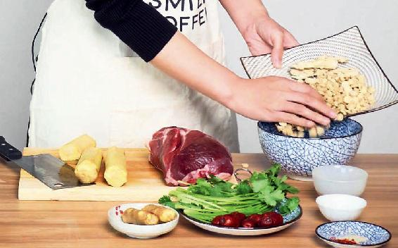
做法：
1.先把黄芪和当归用清水泡上半小时。
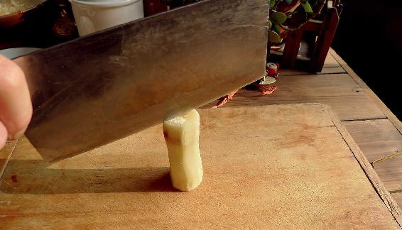
2.甘蔗去皮纵向剖开。
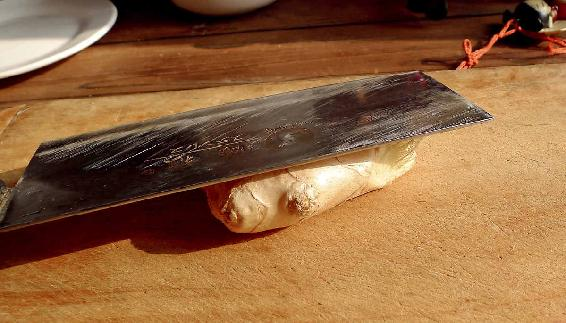
3.生姜用刀拍扁。
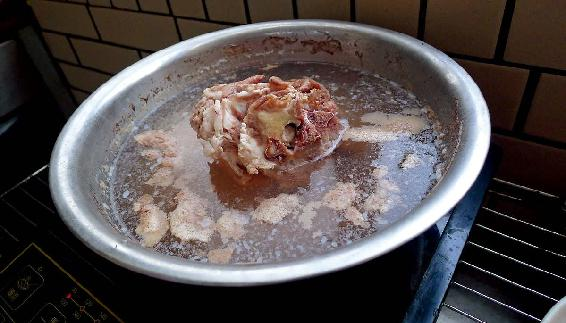
4.锅里放上水烧开，先把羊肉下锅，汆一下，把沫子撇掉，关火捞出羊肉把水倒掉，再把羊肉用水稍微冲洗一下，这样再炖时，羊肉就不会有膻气了。
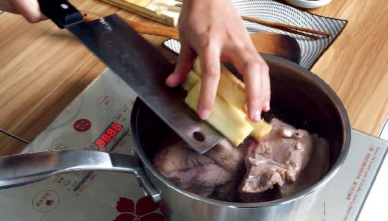
5.锅里重新加水，把全部原料——羊肉、黄芪、当归、甘蔗、生姜、大枣一起下锅。
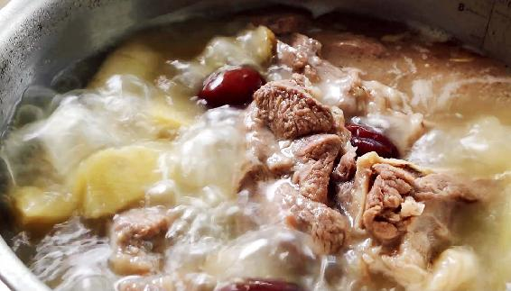
6.大火煮开以后，放入黄酒，然后转中火，炖上一小时就可以了（如果想炖久一点也是可以的，这样羊肉会炖得比较烂，汤味也会比较浓）。在起锅之前，放一点点胡椒粉，这个非常关键，胡椒粉有引火归原的作用。
允斌叮嘱：
1.羊肉、甘蔗、姜、大枣的量，您都可以加减，唯独黄芪和当归的比例不要改变，因为黄芪和当归以5:1来搭配，能够快速生血，效果是最好的。无论是古代的医家还是现代医学，都验证了这一点。注意：如果是一人份的量，黄芪不少于30克，当归则不少于6克。
2.只要不是特别燥热的体质都可以喝，包括小孩子。
3.感冒发热的人不要喝。
4.更年期女性、阴虚火旺者不要喝。
5.喜欢素食的朋友可以买一个榴梿，用榴梿壳里面那个白色的内瓤和榴梿核代替羊肉，来煲这道养心汤，其他的材料不变。
6.这道汤里的当归，要用整的当归——全当归（把当归分开来看，有当归的头、当归的身和当归的尾，它们的功效各有不同。当归的头是止血的，当归的身是补血的，当归的尾是活血的，所以我们在使用的时候要对它们加以区别），这样汤的效果会比较均衡。
孕早期（怀孕三个月内）的女性，可以去掉当归，这样比较保险，而月经量比较大的女性也不要用当归。
7.如果您实在买不到甘蔗，可以用牛蒡来代替。有的朋友问可不可以用萝卜来代替甘蔗。不可以的，因为萝卜会影响黄芪的药效。如果您既买不到甘蔗也买不到牛蒡，可以用一点点白菜帮子来代替，也有一点作用。
喝羊肉汤放胡椒粉可以把羊肉的热性往下引（胡椒有引火归原的作用）。在汤里加一点胡椒粉，不仅可以暖胃，还可以温暖肾脏系统，又不会使人燥热和上火。
我们平时炖别的汤，也可以利用胡椒粉的这个特性。比如，炖一些有鱼、萝卜这样清凉的汤时，最好是加一点胡椒粉，可以平衡汤的凉性，因为萝卜和鱼是凉性的。
我曾经介绍过一个治疗由虚火引起牙疼的方子，就是水加胡椒粉来煮鸡蛋。当我们有虚火牙痛的时候，在煮鸡蛋时放点胡椒粉，不仅不会增加牙痛，反而能让牙痛缓解或者消失，这就是利用了胡椒粉引火下行的作用。
有一点要注意：胡椒粉是在羊肉汤起锅前放的，放入胡椒粉后要马上关火；香菜是不放入锅中的，羊肉汤盛入碗中后撒一点碎香菜在上面就可以了；盐也是不要下锅的，您在喝的时候可以根据自己的口味，在碗中放一点点盐来调味。
这道羊肉汤，因为有黄芪、当归、大枣这些材料，会偏于一种中药的味道，还有一点点偏甜，甜中带有一点当归的苦味，所以汤味是比较浓郁的，不放盐是没有问题的。
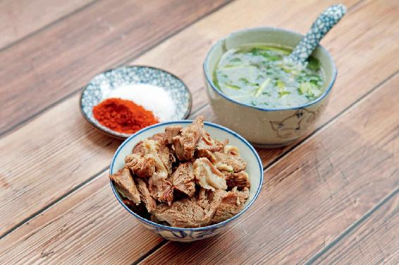
这个锅里的羊肉也是一样，羊肉会吸收黄芪、当归和大枣的味道，所以它也会带有一种药香，您可以把它捞出来直接食用，或者把它切成块儿，然后配一个蘸料碟，放一点盐、辣椒粉调味。
补心养阳汤里的甘蔗也是很好吃的，而且它会吸收黄芪、当归的药性，所以您不妨把它吃掉，味道还是不错的。
这道汤有点偏甜，如果您不太喜欢，可以减少大枣的用量，但不要取消，因为生姜和大枣有调和脾胃的作用。大枣您可以事先掰开，核不要去掉，一起炖煮就可以了。
读者评论：补心养阳汤很香，喝后全身暖暖的
云：冬至前后，我的腰特别不舒服，按老师的指引坚持喝补心养阳汤，一个月后，腰部不适症状明显改善。虽然月经提前了，但经期前后的不适改善了很多。
佳龙电气：昨天早上喝了补心养阳汤，手脚暖暖的，感觉很舒服！
秋天：今天中午喝了补心养阳汤，夏天脚都不热，现在感觉全身都热了。
知行合一：谢谢老师的补心养阳汤，今年几乎每天都喝，早上起床感觉像换了一个人一样，精神得很！
小凤：去年冬至开始喝补心养阳汤，手脚暖和了，整个人精力充沛，气血充足，眼睛也变得格外明亮、有神。
允斌解惑：补心养阳汤可以喝到立春前
邓然：补心养阳汤可以喝到什么时候？
允斌：立春前都可以喝。
海伦：可以提前喝补心养阳汤吗？
允斌：可以。记得先喝开路汤。
蓝笑：甘蔗需要去皮吗？
允斌：甘蔗去皮方便食用。
每年我写的《顺时生活》养生日历，第一天都从冬至开始。因为冬至日虽然在每年的12月，但它却是一年中养生的起点和原点。
为什么说它是起点和原点呢？因为古人认为“气自冬至始”，冬至的“至”不是到来的意思，而是到了顶点的意思，就是至高、至上、至大的“至”。
冬天到了极点，意味着也到了要转换的时候，虽然我们看到天地间一片萧瑟，但是阳气（天地之气）马上就要开始萌芽了。阳气从冬至开始生发。
冬至是天地之气、阴阳之气转换的一个非常关键性的节点。为什么我总是强调在冬至节气的时候进补，就是因为在冬至进补会有平时三倍的功效。特别是在交冬至节气这天，我们一定要好好补阳气。
其实，在交冬至这天是可以一天三顿都补的。南方的习俗是冬至早上要吃汤圆，这是靠糯米来补肾气；北方的习俗是冬至要吃饺子，这也是补。您也可以早上吃汤圆，中午喝补心养阳汤，晚上吃饺子。
补心养阳汤是可以连着喝几次的，早上喝、中午喝都可以，但我不太建议您晚上喝，因为汤里有黄芪，而黄芪是提气的，晚上喝的话，会让人特别精神，这样会影响入睡。晚上要喝补心养阳汤，我建议您可以再喝一点点酒，平时不要多喝酒，但交冬至节气这天是可以适当地喝一点点白酒或者黄酒的，因为它们有暖身活血的功效。
如果把一年看成一天的话，那么冬至就是一天的终点和起点，也就是一天的子夜十二点和零点。
一天中，子夜的时候阴气最强。一年之中，冬至节气前阴气最强。为什么说一年之中冬至节气前阴气最强？因为这一天太阳已经南移到了最南端——南回归线，是太阳离北半球最远的一天，所以阳气到了零点而阴气到了顶点。
冬至节气之后，太阳的直射点就会一天一天地往北回移，阳气也会一天一天地增长。所以冬至的重要意义，我们可以用八个字来形容——“否极泰来，一阳复始”。
“一阳复始”里的“复”，含义是非常深刻的。“复”有“返”的意思，就是返回，循环往复。也有“反”的意思，就是正反，物极必反。
《易经》里有一个卦叫作复卦，古人就是用这个卦来形容冬至的，即冬至的卦象就是复卦。
冬至的时候，虽然阴气到了极点，但同时也是阳气开始生发的时候，是阳气下一个循环的起点。“阳气复生于下”，冬至日开始，阳气开始慢慢地从下面往上生发，这时候它是非常虚弱的，我们一定要好好地保护它。
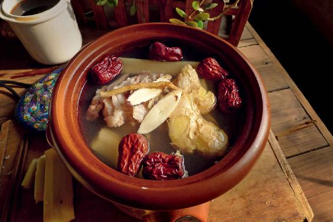
古人在冬至时，是要讲究闭关的。直到清代，皇帝在冬至日也要斋戒。
现在南方还保留着这样的风俗——冬至日这天，一家人都聚在一起“过冬”。
冬至日也是一年中最短的一天，天会黑得非常早，这一天，最好是全家人聚在一起，好好地吃一顿团圆饭，然后早早上床睡觉去体会阳气复生的过程，体会身体哪里有特殊的感受，哪里是身体的薄弱环节，这些就是您身体阳气最虚衰的地方。
冬至节气是察病的好时机，像身体一些亚健康的症状，平时表现得不明显，我们由于工作繁忙很容易忽视掉，但在冬至节气，它就水落石出了，所以真的要抓紧这十五天的机会，好好地来体察身体的变化。宋代的大儒邵雍写了一首《冬至吟》，其中有两句诗写得非常有意思：“玄酒味方淡，大音声正希。”“大音希声”出自老子的《道德经》。我们的身体正如老子所说的“大音希声”，它好像很沉默，其实它无时无刻不在给我们发信号，在提醒我们哪里有问题了，哪里阳气虚弱了，哪里有薄弱环节了。
如果您要想养护好身体，就要学会听清楚它每天在说什么。
冬至节气一共十五天，在这十五天之中，养心、养阳、察病和进补是我们一直要坚持做的功课。
冬至节气也是心源性猝死的高发期，如果您家里有高龄老年人，或者有患有心血管疾病的人，在这时候要特别注意让他们保重身体，避免劳累和感冒。这时候感冒对人的心脏来说是极大的负担，再加上冬至节气的雾霾，对于心脏功能较弱的人来说，是双重打击，所以在冬至一定要避免出现这种情况。
1.冬至节气如果雾霾较严重，补心养阳汤里不要加黄芪
雾霾天喝补心养阳汤不要放黄芪，要多喝几天抗霾饮。因为黄芪会固表，防止病邪入侵。当身体外感邪毒需要往外发散的时候，就暂时不要用黄芪，等邪毒散掉之后再用。
有些朋友的身体比较敏感，在冬至到来的前三天，甚至前五天，就已经有各种不舒服的症状了，比如，失眠、腰酸、背痛，或者觉得冷。他们喝补心养阳汤之后，都有了不同程度的改善。还有朋友说，他长期失眠，喝了补心养阳汤后晚上睡了八小时，觉得非常好。还有一些家里的老人喝了后，觉得身体好像更舒服了。还有一些朋友觉得这个汤比他们想象的要好喝一些。他们可能不爱吃羊肉，觉得羊肉膻，但加入一些中药材后发现羊肉一点都不膻，搭配得当发现这个汤是甜的，味道很不错，连从来不爱吃羊肉、不爱喝药的人，都喜欢喝这道汤。
2.补心养阳汤可以连续喝
有的朋友工作很忙，在做补心养阳汤时就可以一次煮两天的量，煮好之后放在冰箱，第二天拿出来热一热，还是可以喝的。
3.补心养阳汤里面的食材要不要吃？
有的朋友问：“是不是只喝汤，里面的食材要不要吃？”是的，因为喝汤的效果已经很好了，食材只吃羊肉就好，不要吃黄芪（嚼不动），当归可吃可不吃，甘蔗可以给小孩子吃，因为甘蔗是很健脾胃的。
4.感冒后能不能喝补心养阳汤？
感冒了能不能喝补心养阳汤呢？能，但前提是要去掉黄芪，起锅时还可以往汤里多加一点胡椒粉，对于感冒祛寒很有帮助。
有些朋友在冬至正好患上感冒，是不是就意味着错过了这次进补的机会呢？其实，在冬至之前喝葱姜陈皮水，或者葱姜萝卜皮水来开路，就可以预防感冒。
如果您在冬至这几天有点受寒了，那就吃一块橘子皮，最好是川红橘的皮，或者是把橘皮切成小粒用醪糟水来送服，马上就可以把寒气散出去。
5.补心养阳汤喝完后上火怎么办？
有些朋友喝补心养阳汤，会有上火的症状，比如，嗓子痛、牙龈肿痛，这说明他们体内是有陈寒的。
其实，在春季的时候，我们就应该开始做排毒的功课了，不然，到了冬至节气喝补心养阳汤，有的人可能上火。
怎么排毒呢？先用荠菜水散去陈寒，到了立夏的时候，再用姜枣茶排出湿毒。经过春、夏、秋的调养，到了冬至节气您的身体才能足以承受起补心养阳汤的大补。
养生要顺时而食，如果错过了其中的一个环节，那后面的环节就可能跟不上节奏了，它是环环相扣的。
1.糖尿病人能不能喝补心养阳汤？
其实，补心养阳汤对糖尿病人有特别的补益作用。长期患有糖尿病的人往往脾肾双虚，补心养阳汤既健脾又补肾，特别是其中的黄芪，对糖尿病人有特别的好处。我建议糖尿病人可以坚持喝这道汤。
您还可以把里面的原料稍微调整一下，用牛蒡代替甘蔗。牛蒡对糖尿病人来说是很好的保健食材，它可以缓解糖尿病人的口干舌燥。
2.如果买不到甘蔗，能不能用萝卜代替？
记住，补心养阳汤里放了黄芪就不能再放萝卜，否则萝卜会抵消黄芪的药效。萝卜是下气的，它虽然也可以清内热，能对羊肉汤的热性进行平衡，但对于身体比较虚弱的人来说，这道汤里放萝卜，就没有那么大补的功效了。
如果您的身体非常壮实，又容易上火，是可以放一点萝卜的，但身体壮实的人喝汤一般是不需要放黄芪的。
如果有的地方买不到甘蔗，那就用牛蒡来代替。虽然达不到甘蔗滋补的效果，但它排毒的效果更好。特别是对患有胃热、便秘、咽喉肿痛的人来说，用牛蒡的效果会很好。
3.没有黄酒，用一点点白酒也可以
如果没有黄酒，您就可以少放一点白酒，只要是纯粮食酿造的酒都可以。
4.胡椒粉是用白胡椒粉还是黑胡椒粉？
有的朋友问，胡椒粉是用白胡椒粉还是黑胡椒粉？一般来说，调料用的胡椒粉是白胡椒粉。黑胡椒一般都是整粒的，是没有去皮的胡椒。在这道汤里，白胡椒或是黑胡椒的作用差不多。
5.用高压锅或者电压力锅会不会影响补心养阳汤的功效？
黄芪和当归炖煮的时间要长一点才能出药性，如果用高压锅的话，黄芪和当归可以事先泡一泡再炖。
羊肉用高压锅炖是不会影响它的功效的。
6.有卵巢囊肿的人能不能喝补心养阳汤？
网上说有卵巢囊肿的人不能吃羊肉，其实，卵巢囊肿跟吃羊肉没有关系，很多女性的卵巢囊肿，是因为子宫有寒造成的血瘀，吃羊肉反而有好的作用。
7.补心养阳汤里的羊肉能不能用乌鸡来替代？
“羊肉能不能用乌鸡来替代？”有些不吃羊肉的朋友这样问道。
其实，羊肉和乌鸡的功效是相反的，羊肉是补阳的，而乌鸡是滋阴的，所以乌鸡是不能代替羊肉的。
在这里需要说明的是，每一种食物都有它独特的功效，没有什么东西能够完全替代另一种食物。如果您不能吃某些食材，那建议您选择其他的食养方子来进补。如果补心养阳汤里的羊肉被替换了，甘蔗被替换了，黄芪、当归也都被替换了，那它的效果就面目全非了。
如果您不是因为一些习俗或自己体质的关系，只是单纯地因为口味排斥一些食物的话，我建议您不妨先尝试一下，看看它进补的效果如何，再考虑是不是要替换掉它。
8.早上和晚上什么时候喝这道汤比较好？
有些朋友可能有一点中医的常识，知道每一种脏腑在一天当令的时辰不同，所以就会说：“晚上的这个时候是肾经当令，是不是喝这道汤补肾的效果会更好呢？”
其实，我们不能这样机械地去理解。如果说冬季是补肾的时节，那这时候您喝补肾的汤品效果的确好，因为您的身体在当季，所以在这个节气中就可以吸收到营养。但在晚上肾经当令的时候来喝这道汤，等身体将吃下去的食物消化完毕，人体吸收到营养的时候，肾经当令的时辰早已经过去了。
因为这道汤里有黄芪，所以我建议您在早上和上午的时候喝，效果会更好。因为黄芪是补气的，在上午或者早上喝，它会让您这一天精神都很足，但在晚上喝，就会有点兴奋，反而会影响睡眠。
9.女性在经期、坐月子能不能喝补心养阳汤？
女性在生理期喝这道汤一般是可以的，但女性生理期的情况是千差万别的，如果您是血瘀的女性，那是没有问题的。如果您是月经量过大的女性，则要少放红枣，当归尾不放，因为它有活血的作用。
另外，坐月子或者是产妇是可以喝的。
10.怀孕了能不能喝补心养阳汤？
一般来说怀孕三个月之内，不建议您吃太多活血的东西，所以用当归煮汤时要把当归尾去掉。
其实，很多中医传统的安胎药方都是要用到当归的。但如果您是一个孕晚期（怀孕八个月以后）的女性，您在喝这道汤时，黄芪、当归都要减量。因为到了孕晚期是不能吃太多热性的补品的。对于产妇来说就很适合喝。一些产妇在产后出汗很多，喝这道汤还能止汗，效果是很好的。
补心养阳汤里的黄芪、当归，在古代都是药食同源的。如果您对这道汤没有把握的话，可以放少一点儿黄芪、当归，先喝喝看，觉得舒服，您再按正常的剂量来用。
对于一般人来说，冬至节气适合喝补心养阳汤，是因为这是阳气最为虚衰的时候，喝它可以补阳。
为什么一到冬至节气，我总强调要喝补心养阳汤呢？因为冬至节气我们的心阳最弱，这时候有一种心脏疾病容易高发，那就是肺心病。
仲冬之月是保养心脏的时期，在仲冬的前半个月——大雪节气，我们要预防的是急性心肌梗死，仲冬的后半个月——冬至节气，我们主要预防的就是肺心病。
肺心病和急性心肌梗死有一个区别：急性心肌梗死发作往往是毫无征兆的，而肺心病的发作是有征兆的，因为肺心病主要与长期、反复的肺部感染、呼吸道感染有关系。
何谓肺心病呢？就是由肺的问题引起的心脏病。在古代又把它叫作肺胀，这个名字起得很形象。肺心病发作时，有一个很典型的症状——晚上睡觉的时候无法躺平。
如果您在冬至节气这天，一躺下来就想咳嗽，而且咳出的痰呈泡沫样，必须得垫一个高的枕头才能睡着，那您就要警惕自己是不是有肺心病的症状。
年轻人也可能发生这样的情况，特别是经常反复感冒，患有过敏性鼻炎、过敏性哮喘、咳嗽、痰多，大量输过抗生素的人。他们很容易由于一些肺部的问题而引起心脏的不适。
肺心病如果已经到了急性发作的时候，就会引起心力衰竭。
肺心病引起的心力衰竭通常是先发作在左心，其实就是肺循环瘀血，发作首先表现在肺部，而不是心脏，所以对于由肺部引起的咳嗽、气短、胸闷、呼吸困难等症状，我们要特别警惕。
心肺功能虚弱的人，平时自己也会有感觉，除了经常咳嗽、痰多、哮喘外，还有一个重要的表现——经常性浮肿。早上是脸部浮肿，到了下午是小腿浮肿。
有以上这些症状的朋友，特别是家里有心肺功能比较虚弱的老年人，在冬至节气，要特别注意观察他的睡眠和呼吸。因为肺心病引起心力衰竭有两个早期信号：一是睡觉的时候必须要垫高枕头，否则就会咳嗽不停；二是气短，呼吸困难。
如果有这两个信号，您最好马上带他去医院好好检查一下。
急性心肌梗死跟人的劳累和情绪波动更加相关，而肺心病对气候因素更加敏感。
假如突然降温、刮大风，我们就要特别注意给家里心肺比较虚弱的人预防，特别是平时容易感冒的人。
因为容易感冒的人往往会肺气虚，而肺心病的发作首先是肺气虚，然后脾虚、肾虚，最后导致心肺功能虚弱，所以，一个人特别容易感冒，抵抗力比较差，那么我们从小就要开始预防。
肺心病的发展是一个非常漫长的过程，每一次感冒的不当调理、治疗，都是对心肺功能的一次伤害，日积月累，就会对我们的心肺功能造成不可逆转的伤害，最终留下肺心病的重大隐患。
如果您家里有高龄老年人，在冬至节气时感冒了，您要特别注意给他调理，最好不要大量输入抗生素，因为这时候大量输液对于心脏功能是一种严重的伤害。
其实，对肺心病的预防说难也难，说简单也简单。如果每一次的感冒、咳嗽，我们都能从小或者年轻的时候就注意，在感冒、咳嗽的早期，用饮食调理好，就不至于拖到非得用药物等方式来治疗。
对雾霾的防范，包括喝抗霾饮、清肺洗尘汤等，不仅仅是对我们的肺脏、血液的一种保护，也是对心脏的保护。
凡是在冬至节气晚上睡觉的时候想咳嗽，或者是躺不好，必须要垫个枕头才能舒服的朋友，最好在冬至节气喝薤白粥。
薤白是古代的五蔬之一，是古代人常吃的一种蔬菜，现在大多数地区的人都不怎么吃了，只在我国西南地区还保留有这种蔬菜，被当地人称为苦藠（jiào）。在北方，还有野生的，俗名称为“小根蒜”。
苦藠和藠头实际上是同一种蔬菜，藠头是经过人工选种培育的，比较大，味道也比较好；苦藠的个头跟藠头很像，但是非常小，只有指甲盖那么大，味道也有一点苦，很多人吃不惯，但这种苦味其实是入心的，所以苦藠对心肺系统来说是一种很好的保健蔬菜。
如果您买不到苦藠，那您就去药房买干品的苦藠，中药名叫作薤白。
薤白粥
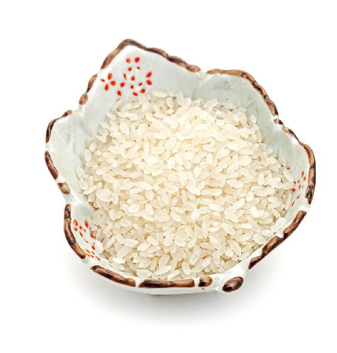
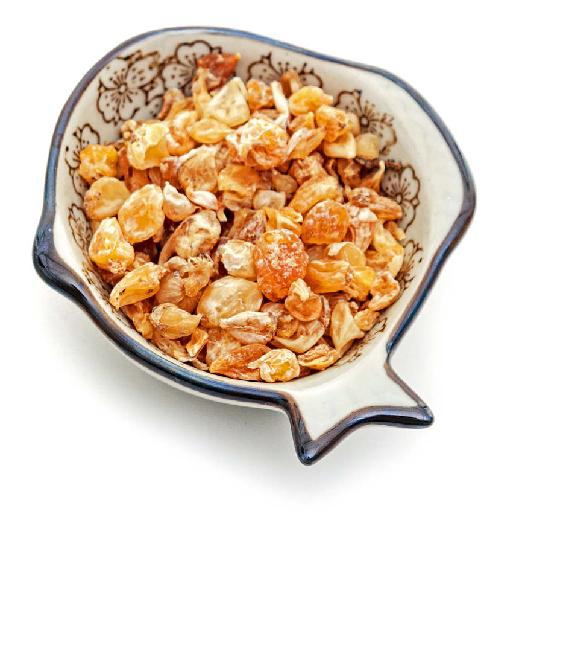
原料：薤白30克，大米适量。
做法：一起熬粥。
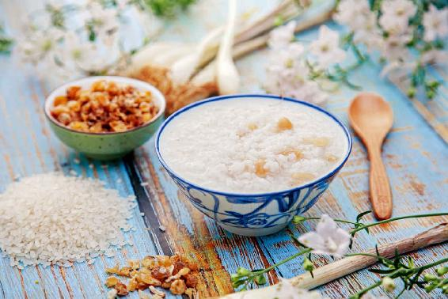
第一，有咳嗽、哮喘等慢性支气管炎的老年人。
第二，患有过敏性鼻炎、哮喘，长期咳嗽痰多的人。
第三，受雾霾天气侵害的人。
心肺功能比较虚弱的人，如果吸入了被污染的空气，容易诱发肺部的感染，所以在雾霾天气喝这道粥，能够很好地养护心肺系统。
冬至节气，是阳气的起点，我们要想从冬至节气开始养生，那就从心开始。保护心脏，就是保护我们身体的国王。
允斌解惑：薤白是自制好，还是直接去中药房买？
小小铭：薤白是自制，还是直接去中药房买？市场上的薤白掺假严重吗？如果老人消化不好，可以在薤白粥里加点什么呢？
允斌：自己买新鲜的薤白比较放心。消化不好加陈皮。
冬至节气阴气最盛，阳气刚刚开始生发，这时候是察病的好时机。
如果您身体的某处功能比较虚弱，特别是某脏腑的阳气比较虚，那么冬至前后您身体上的反应会比平时明显，所以我一直建议大家在冬至的时候要把心放静，减少活动量，放松身体，这样自己才能更加敏锐地觉察到身体哪个地方不舒服。哪个地方不舒服，说明那个地方的阳气不足，比较虚弱。
很多朋友平时不怎么失眠，但在冬至节气，忽然就感觉睡眠质量变差了，有的朋友会整夜失眠，有的朋友会整夜做梦，有的朋友会半夜醒来，有的朋友很早就醒来……这就是人体心阳虚衰了。
其实，人的睡眠是一个心神逐渐安定下来的过程。虽然失眠的类型有很多种，比如，痰湿型失眠、肝火型失眠，但归根结底还是阳不入阴，导致心神无法安定下来。
不管是哪一种类型的失眠，最终还是要好好调理心。因为心主管睡眠，如果我们的心得不到足够的滋养，就会难以入睡。
心是身体的君主之官，是主管我们全部脏腑的，从失眠的不同症状，我们也能看出来，除了心阳虚衰之外，其他脏腑也有问题。
如果您在冬至节气容易失眠的话，主要是心的问题。
如果您不失眠却总是在做梦，这是肝的问题，您要补心和肝，同时还要注意防上肝火和上心火，最好是清补。
如果您从霜降节气就开始坚持喝双莲墨鱼汤的话，会发现往年由肝火旺引起的失眠、多梦等情况，今年大有好转，您要坚持喝双莲墨鱼汤。
在冬至节气，有的人会感觉到腰腿或者膝盖痛；有的人觉得后腰特别凉；有的人后腰直不起来，感觉无力；有的人觉得膝盖发冷，这些都是肾阳虚的先兆。
那么，此时喝补心养阳汤就很适合，而且羊肉和胡椒粉您可以多放一些，这样可以起到祛寒、强筋、壮骨的作用。还有，补肾养藏汤中的板栗您也可以多放一些。
有的朋友在冬至节气特别容易拉肚子，或者大便不成形，其实，这是脾阳虚的信号。有这种情况的朋友，我推荐您多吃点茯苓粉，也可在补心养阳汤里多放一点去心的莲子，它能健脾补阳，防止拉肚子和便溏。
读者评论：汤头很甜，完全没有羊肉的膻味
文麒舒：按照老师的嘱咐，冬至日上床静躺，感觉除了腰有点酸困，没有其他不适。第二天早上喝了补心养阳汤，满屋都是当归的清香，甘蔗也很好吃。汤头很甜，完全没有羊肉的膻味，喝后全身暖暖的，感谢陈老师。
从冬至日开始，我们做好进补、艾灸、静养等养生功课，到第七天早上起来，您可以感觉一下自己的精神状态，有没有感觉神清气爽。如果是这样，说明您度过了冬至养生关。
因为冬至后七天，阳气复生，在这七天内好好养护阳气的人，会感觉到精气神一天比一天好。
这几天新生的阳气，会让我们从冬至日前后的阳虚状态恢复过来，这就是“一阳来复”的感觉。
如果感觉身体焕然一新，暖洋洋的，那么今年喝补心养阳汤，您已经完成任务了。因为冬至连喝七天的效果，超过平时喝三个星期。
如果您没有感觉到阳气的恢复，可能是阳虚较重，也可能是冬至没有养好。那么，补心养阳汤还要多喝一段时间。